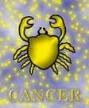

<html>
<head>
<title>Rák</title>
<script type="text/javascript" src="js/public.js"></script>
<script type="text/javascript" src="js/subpage.js"></script>
<script language="JavaScript1.1">
IMG_PICT="images/inte/horo/" 
horopict = ""
var subpage = new Array(
horopict+"A rák is kettõsjegy. Igen érzékeny lélek, szeszélyes hangulatváltozások és remek megérzések jellemzik. Egyik pillanatban teljes odaadással lelkesedik valamiért, de a másik pillanatban már csak legyint, nem is érdekli õket az, amirõl az elõbb még szuperlatívuszokban beszélt. Mindenkit gyanakvással fogad, aki közeledni próbál, de ha egyszer magához engedi a kiválasztott személyt, attól védelmet és teljes odaadást vár. Néha túlzottan óvatos, gyanakvó, máskor túlságosan bizalmas, ez mind a Hold hatásának köszönhetõ. A harag, a szeretet érzése is gyakran változik és egyik érzés sem hagy maradandó nyomokat. Az is elõfordulhat, hogy csak azért kellemetlenkedik, sértegeti barátait, szeretteit, mert egész egyszerûen rájuk unt, elege van belõlük. Nem okoz nehézséget, hogy beleélje magát mások lelki-, illetve gondolatvilágába. A mûvészetek iránt erõsen vonzódik. Rendkívüli emlékezõtehetsége van, az apró részleteket is képesek rögzíteni. Otthon és családszeretõ típus, lelkiekben és anyagiakban mindent megad a családjának. Nagyra értékeli a szerelmet, az érzelmeket, szüksége van a megértésre, hízelgésre, kedveskedésre, nagyra értékeli a lelki összetartozást. Mindebbõl azt a téves következtetést lehetne levonni, hogy gyámoltalan félénk, pedig ez nem igaz, sokszor nagyon is befolyásolja, irányítja környezetét. Akadályok láttán sem hátrál meg. Lelki problémáikat eltitkolják, sokáig rágódnak rajta. ",
horopict+"Víz-jegy, változó töltés, kardinális minõség. A Rák eleme a víz. Ennek hatására a Rák ember érzékenysége a lelki rezdülések felfogására utolérhetetlen. Uralkodója, a Hold pedig erõs befolyásolhatóságot és örökös változási, változtatási kényszert idéz elõ benne. A Rák ember mindig kész a külvilágból származó élmények befogadására, hangulata az eseményekkel párhuzamosan, éles váltásokkal tarkítva, állandóan változik. Minden pillanatban képes ráhangolódni az új hatásokra, alkalmazkodni az új körülményekhez, beilleszkedni az új helyzetekbe. A Rák alkalmazkodása azonban csak ámítás, csalfa látszat, mely kényelemszeretetébõl, tudatos konfliktuskerülésébõl, tehát tulajdonképpen védekezésbõl fakad. Mivel a minõségi jelek közül a kardinálishoz tartozik, ezért viaszszerû lénye megváltoztathatatlan belsõ magot takar. Elmélyült szemlélõ nem is tarthatja õt nagy alkalmazkodónak, mert lényegében csak a számára jelentéktelen dolgokban engedékeny, csak a céljai megvalósítása felé haladó úton hajlandó magát vezetni, csak az érdekeit nem keresztezõ megoldásokra mond igent. A Rákkal való kapcsolattartásnál mindig fel lehetne tenni a kérdést: melyikünk az irányító, és melyikünk az irányított? Sose hagyjuk magunkat a Rák passzív és diplomatikus viselkedésétõl megtéveszteni! Ez nem azt jelenti, hogy egyúttal uralkodni is hagy maga fölött. Életét nagyon meghatározza a rokon- és ellenszenv érzése. ",
horopict+"Ha valaki nem rokonszenves neki, azzal szemben bizonytalanná válik és elzárkózik elõle. Mivel alapvetõen az érzelem uralkodik magatartásán, olyan erõs ellenszenv alakulhat ki benne, hogy azt nem képes leküzdeni magában. Ezt persze az érintett észreveszi és õ is ellenséges lesz irányában. Nyíltan azonban nem támadhat, hiszen a Rák sem nyíltan lépett fel ellene. Így a Ráknak már sikerült is beszereznie egy titkos ellenséget. Értékes tulajdonsága az intuíció, mellyel megérzi mások szándékait, terveit, kiolvassa gondolatait, s melynek segítségével, ráérez a számára helyes útra. A Rák tehát a tudata mélyébõl felmerülõ érzéseire támaszkodik. Nagyszerû memóriájával a Rák képes a legapróbb részleteket, fordulatokat is megõrizni, mások gondolatmenetébõl, s alaposan megrostálva, csak az értékest meghagyva, már mint sajátját adja elõ -nagyon hitelesen, vagy használja a megfelelõ pillanatban. Különösen, mint színész tudja kamatoztatni e \"szivacs\" -tulajdonságát. Õ a hivatásos utánzó, akinek külseje és belseje egyaránt vissza tudja adni mindazt, amit látott, hallott, amit a külvilágból magába szívott. A Rák ha megfelelõ környezetben él, mûvelt, kultúrált ember lesz, magasra képes feltornászni az IQ-ját. Ha azonban alacsony szellemiségû emberek veszik körül, akik nem támasztanak vele szemben követelményeket, elkényelmesedik. ",
horopict+"Akinek a víz jelû a születéspontja, mint a Ráknak, az bizonyos önbizalomhiányban szenved, mely gátolja képességei kibontakoztatásában, fejlõdésében. Mint a víznek, melynek nincs saját alakja, a Ráknak is szüksége van valamilyen edényre (eszmékre, magatartásmintákra, ösztönzésre), mellyel azonosulni tud, melynek alakját felveheti, mely segít neki formát ölteni. A Rák mindig tartozni akar valakihez. Számára elképzelhetetlen, hogy hosszú ideig egyedül éljen. Az agglegény életformát biztosan nem a Rák férfiak találták ki, és a Rák nõk is mindent megtesznek azért, hogy ne maradjanak hajadonok. Ha olyan partnerre talált, akinek a személyiségét erõsebbnek érzi a magáénál, akire -talán emiatt is- felnézhet, aki imponálni tud neki, azt elbûvölten követi, lesi minden kívánságát, sóhaját, szolgálatkészsége határtalan. A szerelemben érzelmes és gyengéd. A Rák no anyáskodik a férfi felett, a Rák férfi féltékenyen védelmezi a nõt. Mindent megtesz azért, akit szeret. Igyekszik harmóniát teremteni, megkísérli lecsendesíteni a hullámokat. Semmit sem tart elviselhetetlenebbnek, mint a szeretett lénnyel való veszekedést. Semmit sem lehet nála elérni, a véleménykülönbségek kiélezésével, erõszakoskodással, harccal. Bármennyire szerelmes, a háborúzás feszültségét nem bírja, inkább elmenekül. ",
horopict+"Ha partnere kellõen okos, akkor nem veszi komolyan hangulati változékonyságát, nem sértõdik meg szeszélyessége miatt, és nem haragszik rá hisztizéseiért, mely a Rák feminin alkata miatt nõkre és férfiakra egyaránt jellemzõ. Különösen fontos, hogy igazát elismerje -ha érdemesnek tartja rá- ne restellje megdicsérni, amit a Rák szégyenlõs mosollyal nyugtáz, de ezzel le lehet venni a lábáról. A Rák az életét vegetálásnak tartja, ha senkinek nincsen rá szüksége és akkor pótcselekvésbe menekül (például: a nassolás, ivás...). A lunáris hatás megmutatkozik az otthonához, családjához, szüleihez való viszonyban is. A Rák embernek szerves része, tartozéka a védelmet, biztonságot jelentõ otthona. Élete központi feladatának tekinti a saját lakás vagy ház megszerzését. Családcentrikus. Házias. Nem zárkózik el - nagyvonalúan legyintve, hogy ez az asszony dolga - a legkisebb háztartási problémák megbeszélésétõl sem. Asszonyának érdemes megcsillogtatnia konyhamûvészetét, mert a Rák férfiban jó étvágyú és hálás közönségre talál. Nagyanyáink véleménye szerint az ebbe a jegybe tartozó férfiakat lehet a \"hasuknál megfogni\". A Rák anyai jegy, a szülõi házat is szimbolizálja. Akkor érzi jól magát, ha az összes családtagját maga mellett tudhatja. (Ez persze lehetõvé teszi a feladatok megosztását is, hiszen a Rák kényelmes és nem akar belepusztulni a rengeteg háztartási munkába. ",
horopict+"A maga kardinális módján kialakítja az otthoni egészséges munkamegosztást. Mindenkinek jut feladat, melyet õ oszt ki. Hiszen otthonában õ az úr.) A Rák termékeny jel, ezért a saját gyerek iránti vágy nagyon erõs benne. Ha házasságából gyermek születik, ez házastársához való kötõdését még elszakíthatatlanabbá teszi. Sok Rák intuíciója a telepátiáig fejlõdik gyermekével kapcsolatban. Képes a távolból is megérezni, ha a gyermeke bajban van, vagy valamilyen veszély fenyegeti. A Rák különben is szeret gyûjtögetni. Amiben emberi munka van, s ráadásul még használható is, azt egy Ráknak nincs szíve eldobni. Gyûjtögetésének köznapibb, nem ennyire energiaigényes formája az, hogy egyszerûen hagyja, hogy összegyûljenek a dolgok körülötte. Szekrényei, fiókjai tele vannak, a Rák számára azonban semmilyen tárgy nem lehet annyira hitvány, hogy õ annak kidobására vetemedjék. A holnapra is gondolni kell! Ebben is hasonlít állat szimbólumához, hiszen az is inkább elveszti ollóját, semhogy lemondjon a zsákmányáról. A Ráknak határozott igénye van a harmóniára, csak akkor érzi jól magát, ha az õt körülvevõ világgal összhangban élhet. Mivel erre a jegyre a legjellemzõbb a visszahúzódási vágy, hogy az élet viharait otthona békéjében nyugodtan feldolgozhassa, ezért mindazt igyekszik elkerülni, ami a közvetlen környezetében viharkeltõ lehetne. A Ráknak fokozott igénye van a mozgásra, a helyváltoztatásra. " ,
horopict+"Mindig a messzeségbe, távoli, egzotikus vidékekre vágyódik. Gondolatban hosszú hajóutakat tesz meg tengerészként, vagy mint régész, kutatja a régi korok titkait egy brazíliai õserdõben végzett ásatáson. Imádja a vízi sportokat. Kitûnõen úszik. Ragaszkodása és családjától való elszakadási képtelensége ilyenkor is jelentkezik: Még egy megromlott házasságban élve is magától értetõdõnek tartja, hogy a hétvégéken vagy a szabadságán feleségével és gyermekeivel legyen. Nem tudja felvállalni a külön utakkal járó konfliktusokat. Egy barátnõvel eltöltött érzelemgazdag víkendért nem villámháborúzik, és nem bújik meg a kizárólag az unt feleség számára kitalált mesék mögé. Csak akkor tudja felszámolni az arra már rég megérett kapcsolatát vagy házasságát, ha van már valami érzelmi kötõdése egy új, ideálisabbnak tûnõ asszonyhoz. O a váltófutás bajnoka. Fiatal korában erõsebb nála a Hold-hatás, bizonytalan, még nem tudja, mit akar. A Rák úgy teszi meg vándorútját a világban, hogy bármerre jár, bármibe kezd, bárhol dolgozik, intuíciója \"antennájával\" érzékeli azokat a \"hullámhosszokat, amelyeken még nem közvetítenek adást\". Vagyis ráérez az addig még ki nem használt lehetõségekre. Fantáziája hamar megindul, s mindjárt fel is építi magában tervét: mit és hogyan lehetne továbbfejleszteni, mit mire lehetne felhasználni. Azonban a gondolat megfogalmazódásától a megvalósításig óriási az idõbeli távolság. ",
horopict+"Sokszor két-három év is eltelik, míg valamelyik terve realizálása érdekében megteszi az elsõ lépést. A Rák vár, hordozza, érleli magában az ötletét. S csak akkor, ha már úgy érzi, teljesen megérett, kiteljesedett benne a gondolat, s itt az ideje, hogy leszakítsa a gyümölcsét, hozakodik elõ vele. De akkor sem erõszakosan. Szép csendesen elhinti a megfelelõ helyeken, a megfelelõ emberek elõtt. Hátha felkapja rá a fejét valaki, felismeri benne a nagy lehetõséget és segít neki az álomból valóságot csinálni. Tehát a Rák nem küzd, hanem vár. S közben bízik abban, hogy az idõ neki dolgozik. Szívesen dolgozik olyan helyen, ahol megtarthatja önállóságát, ahol sok emberrel lehet kapcsolatban, ahol kiélheti gondoskodási ösztönét és persze, ahol a fizetség arányban áll a befektetett munkával. A szolgálatkészségével kiválik a kollégái közül. De alkalmazkodása nem simulékonyság vagy talpnyalás. Pusztán azt akarja elérni, hogy békében hagyják, mert feszültségben nem tud dolgozni. Becsvágyó, de saját karrierjéért nem tesz semmit.A feljebbjutásért, rangért, magasabb beosztásért valló tülekedésben nem hajlandó részt venni. Azt azért reméli, hogy képzettségét, szakmai hozzáértését, munkájában való szívósságát fõnökei megfelelõen értékelni fogják. Elégedetlenségét és megbántottságát egy nyugodt és elégedett ember álarca mögé rejti. ",
horopict+"Kardinális, de az otthona az igazi életterülete, csak szerettei érdekében tudja erõit összpontosítani. A vállalati és hivatali hierarchia árnyékembert tud csinálni belõle. Az örök változás a Rák életének törvénye. Ahogy a fogyó Holdat követi a telihold, úgy lehet biztos abban egy jó képességû Rák, hogy életében a háttérbe szorítottság, a visszaesés korszakát követi az elismertség, a fellendülés idõszaka - csak talán egy másik foglalkozási ágban. De még ez is belefér az örökös változás fogalmába. ",
horopict+"<b>Bolygója:</b> a Hold<br>"
+"<b>Eleme:</b> a víz<br>"
+"<b>Természete:</b> állandó<br>"
+"<b>Erényei:</b> együtt érzõ, segítõkész, családcentrikus, fantáziadús<br>"
+"<b>Hibái:</b> álmodozó, szeszélyes, túlérzékeny, nem állhatatos<br>"
+"<b>Testrésze:</b> a gyomor <br>"
+"<b>Betegségre való hajlam:</b> emésztõszervi panaszok, gyomor-, epe-, májbetegségek, nagyon hajlamos a cukorbetegségre, mindemellett született hipochonderek<br>"
+"<b>Védõkövek:</b> smaragd, opál<br>"
+"<b>Szerencsekövek:</b> smaragd, krizopráz, aventurin, opál, igazgyöngy, holdkõ, karneol, rubin"
);
</script>
</head>
<BODY background="images/public/background/bg1.jpg">
<script language="JavaScript1.1">
	firstdraw("RÁK június 22. - július 22.");
</script>
</body>
</html>